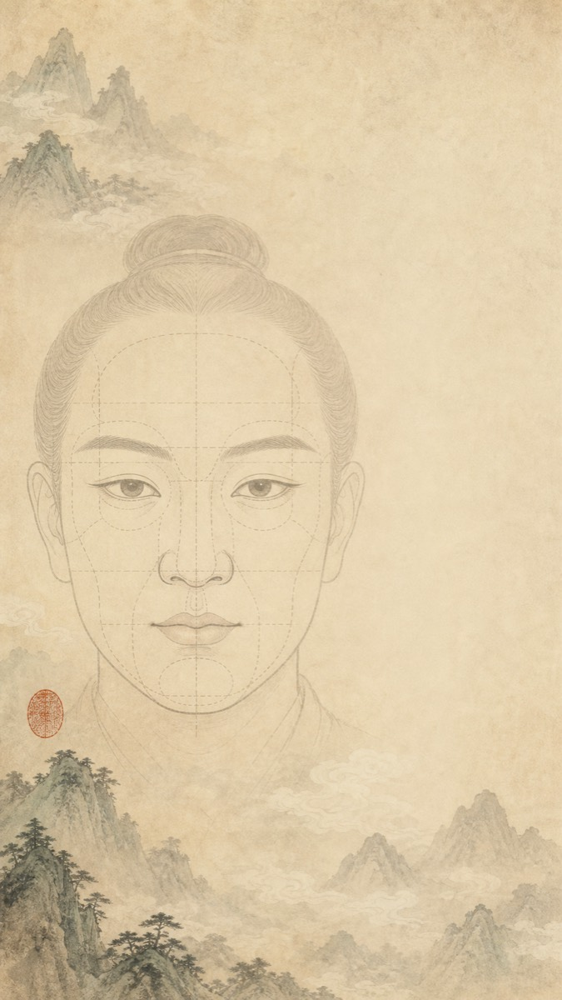

第一卷 观形取象
双人照片
识别引擎
本地取点观眉、眼、鼻、口、颌之比例走势；照片不上传服务器。

先观眉目鼻颐之势，再问你们关系与卡点。所出皆为古籍象意，不作定命，不伤其人。
邪正看眼鼻，真假看嘴唇；功名看气概，富贵看精神。
先定三停，以观形局。
请入双相点阵，先定眉目鼻颐之界。
您是否想通过回答几个问题，获得更加针对性的关系建议？我们会把双相小记、关系类型、你的具体问题和问诊回答一起合参成签。
照片不参与后续文本合参，只使用面相术语摘要、关系类型、你的文字问题与问诊回答。
正在合并双相小记、关系问诊与当下卡点。
只合参非身份化摘要，不接收原始照片。
以上为古籍相法术语的文化娱乐化表达，只作关系反思与沟通参考，不构成真实人格、心理、命运或关系结论。